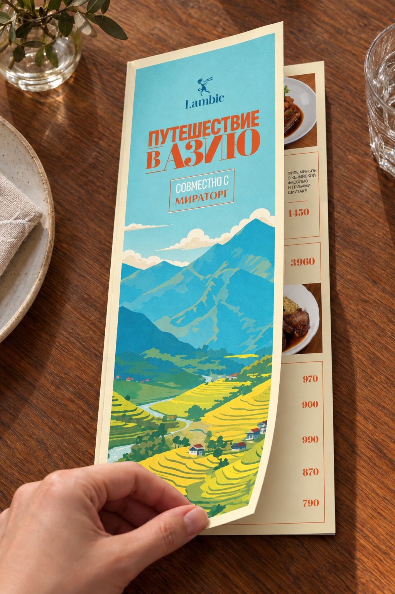
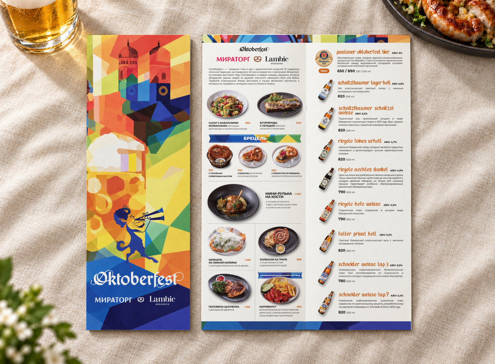
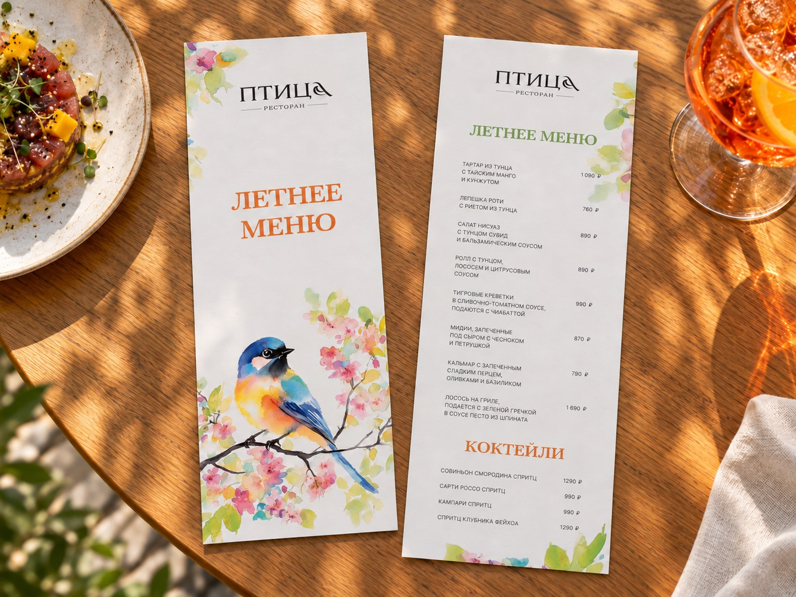
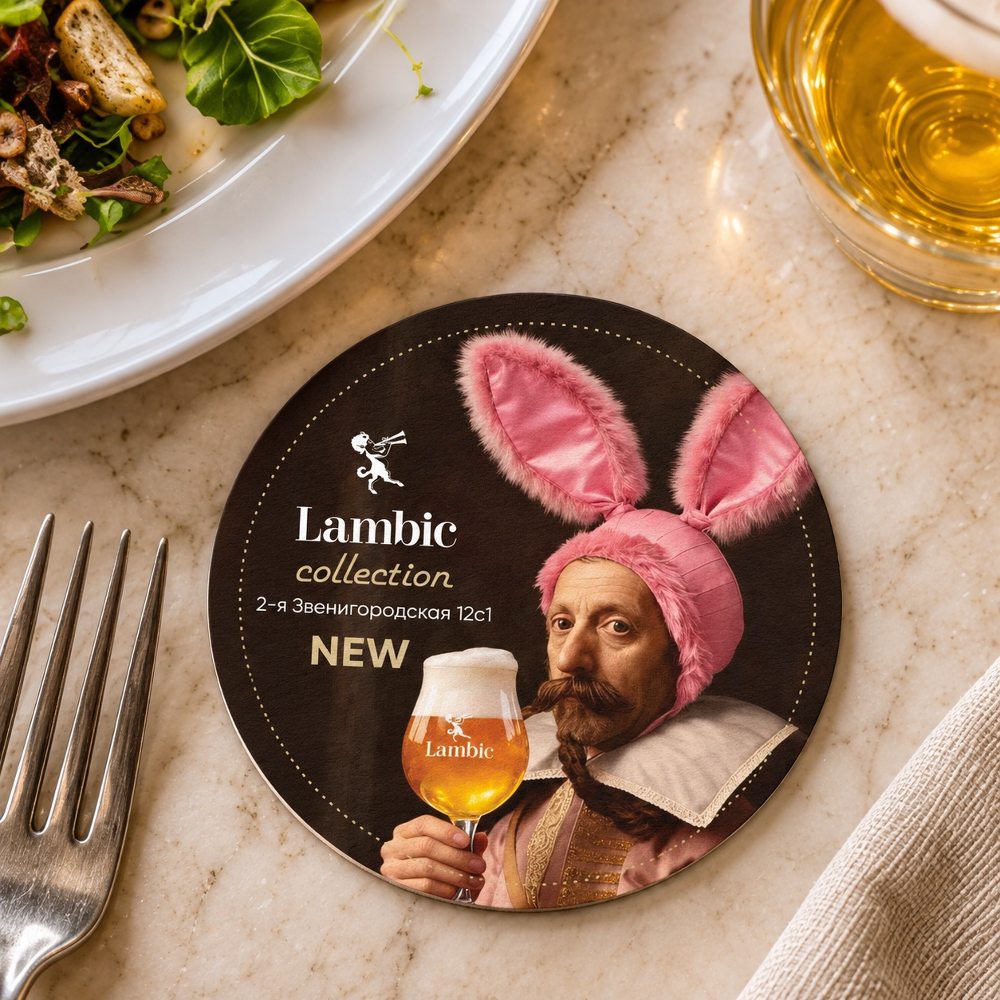
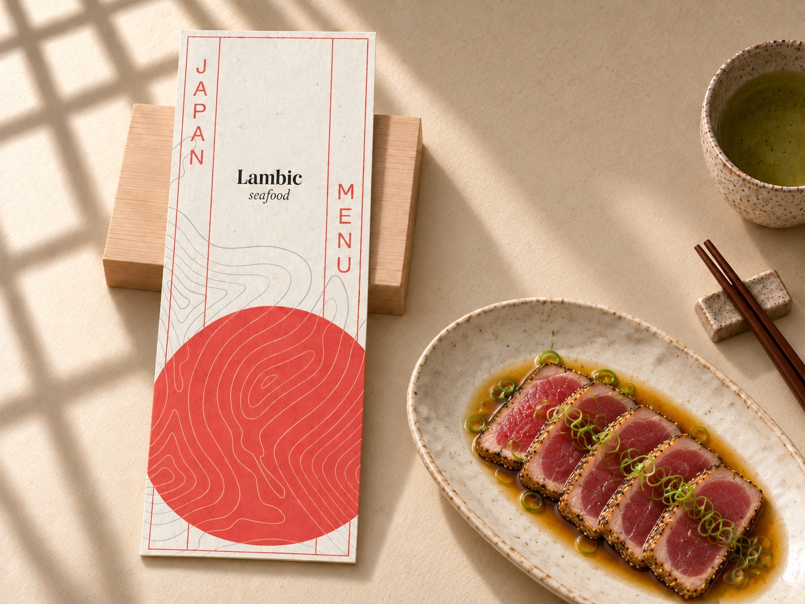
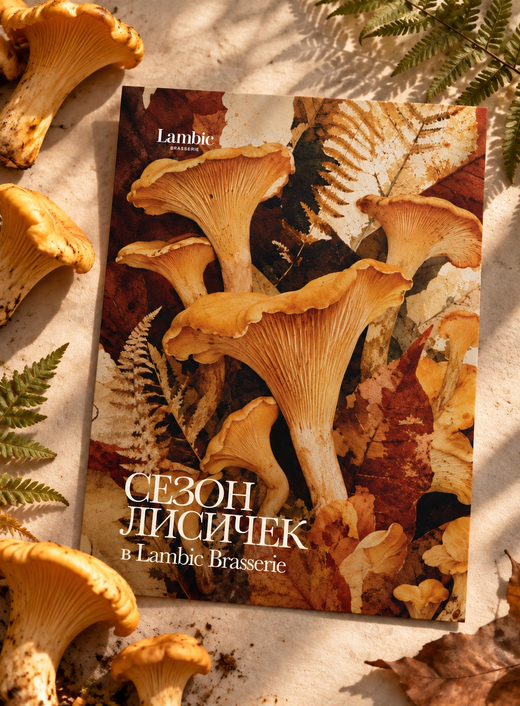

Октоберфест 2026
Lambic
Летнее меню
Птица
Костеры
Lambic
Сезонное японское меню
Lambic
Сезон лисичек
LambicВ этой категории пока нет проектов.
Графический дизайнер. Меню, печатные материалы и визуальные коммуникации для ресторанов.






В этой категории пока нет проектов.